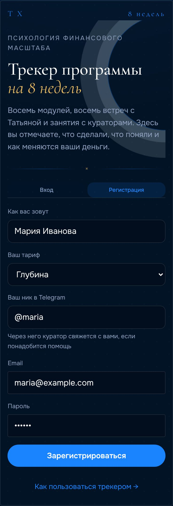
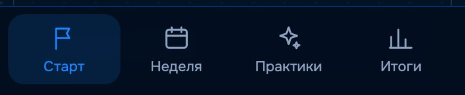
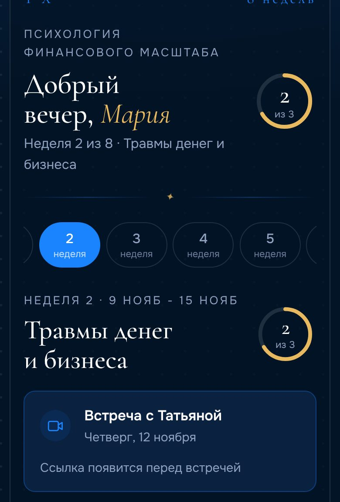
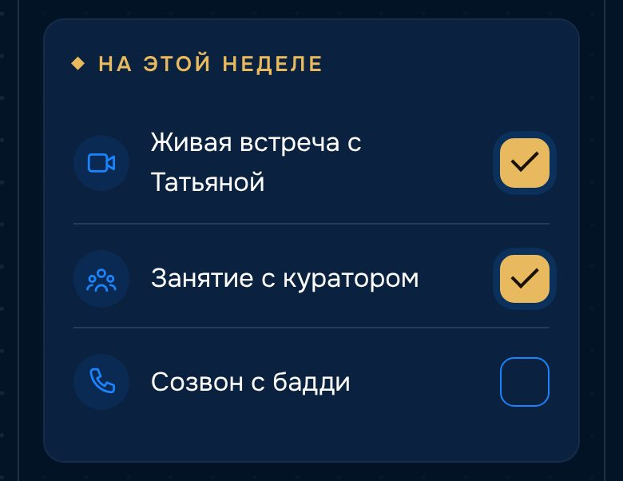
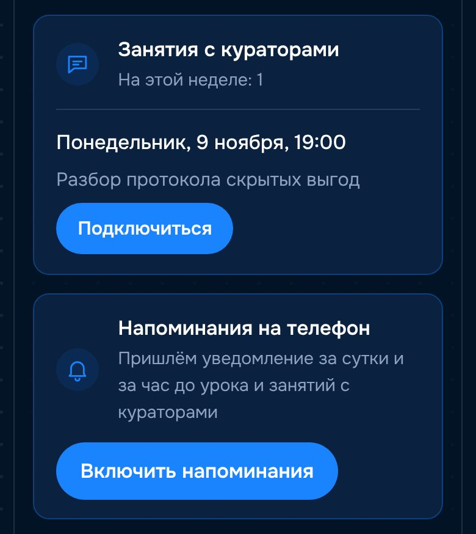
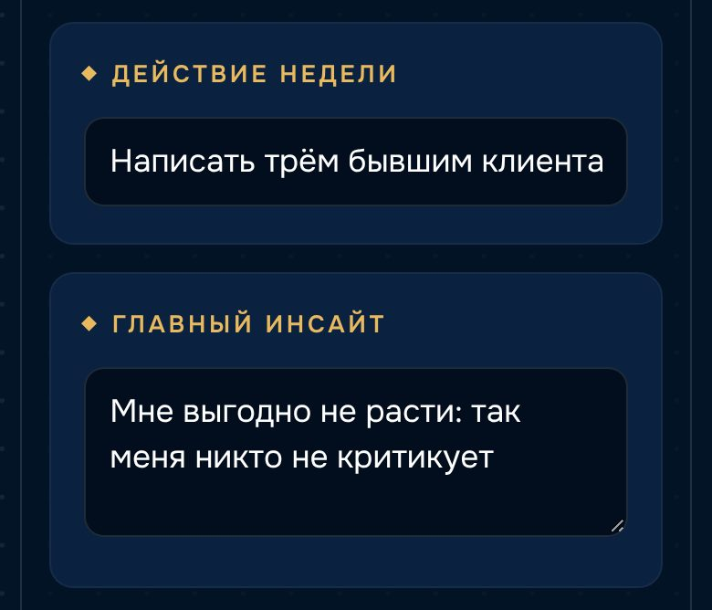
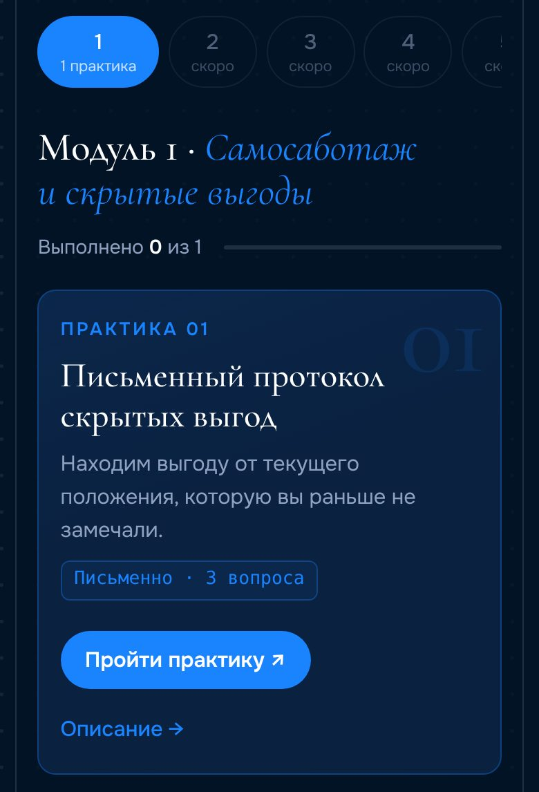
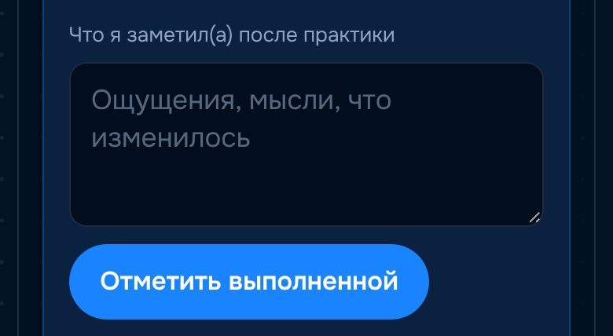
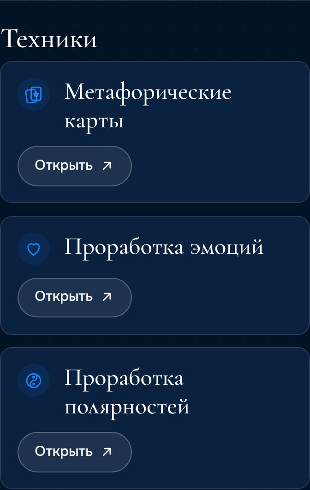
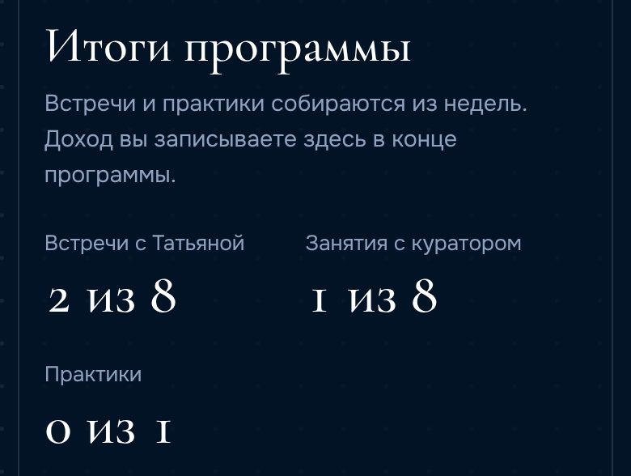

Психология финансового масштаба
Самое необходимое за пять минут: как зарегистрироваться, включить напоминания, что отмечать каждую неделю и где найти практики.
Открыть трекерШаг 1

Шаг 2
Чтобы трекер открывался как приложение, добавьте его на главный экран:
Шаг 3
Трекер сам напомнит об уроке с Татьяной (четверг, 9:00 по Киеву) и о занятиях с кураторами: за сутки и за час до начала. Нажмите на уведомление — откроется эфир.
Шаг 4
Внизу экрана четыре вкладки:

Шаг 5
Трекер сам открывает текущую неделю. Кольцо справа показывает, сколько пунктов недели вы уже выполнили.
В блоке «Встреча с Татьяной» — дата встречи, кнопка «Перейти на эфир» и записи. Если запись разделена на части, будет несколько кнопок.

Ниже отмечайте галочками, что сделали за неделю:

В конце страницы недели — короткие записи для себя:
Ниже встречи с Татьяной — «Занятия с кураторами»: дата, время, тема, кнопка «Подключиться» и запись после занятия. Пока расписание не утверждено, там написано «Расписание уточняется».


Шаг 6
Во вкладке «Практики» — задания текущего модуля. Практики открываются после встречи с Татьяной, поэтому в будущих неделях стоит «скоро».

Когда выполните, запишите, что заметили, и нажмите «Отметить выполненной».

Ниже, в блоке «Техники», — тренажёры для самостоятельной работы между встречами: метафорические карты, проработка эмоций и полярностей. Каждый открывается отдельно.

Шаг 7
Здесь собирается всё, что вы отметили: встречи, занятия с куратором, практики и доход. Ничего заполнять не нужно, кроме дохода и оценки результатов в конце программы.

Главное — заходить каждый день на вкладку «Неделя» и отмечать, что сделали.
Открыть трекер